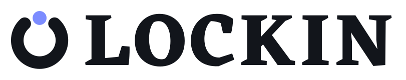
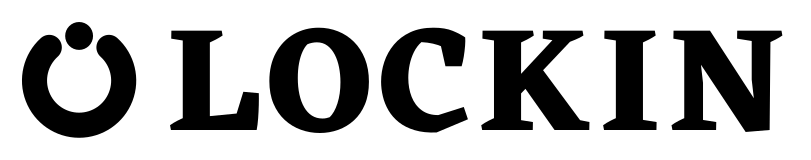
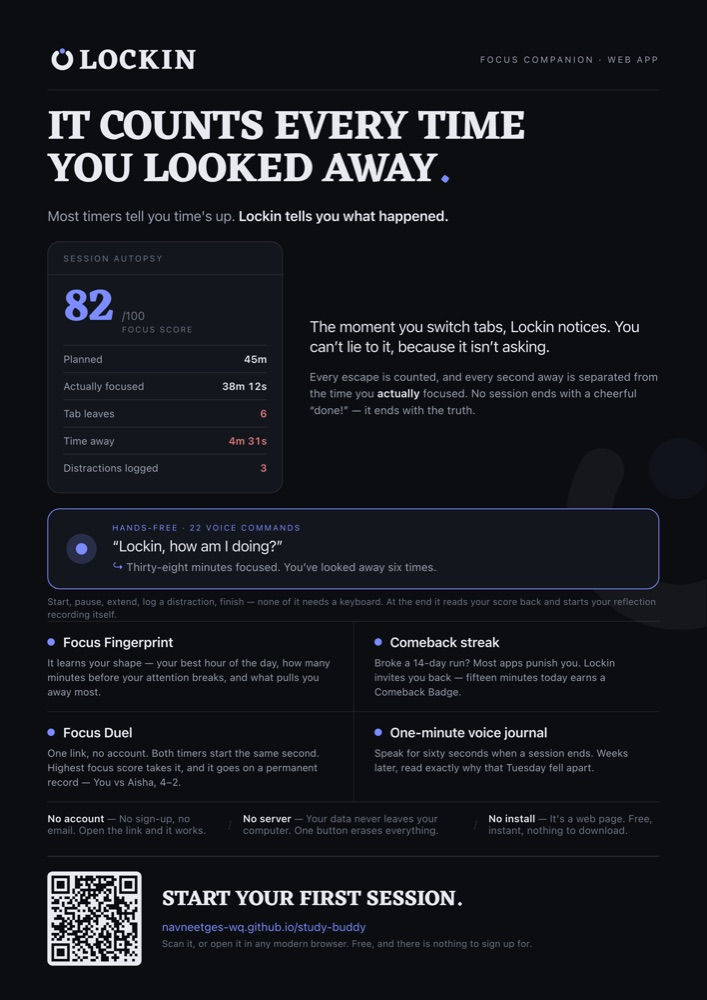
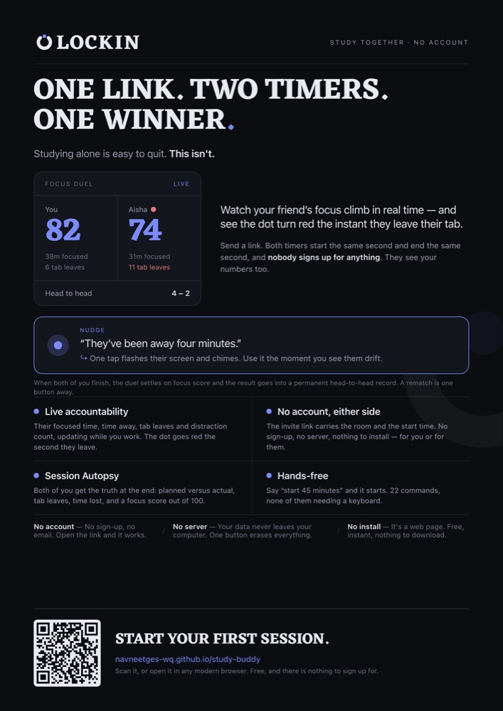
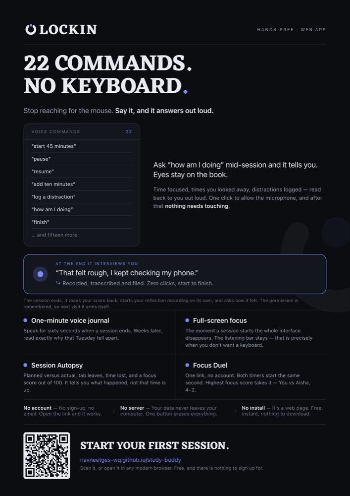
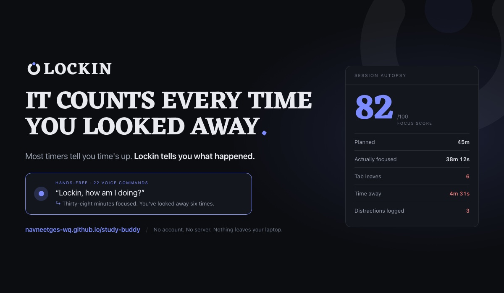
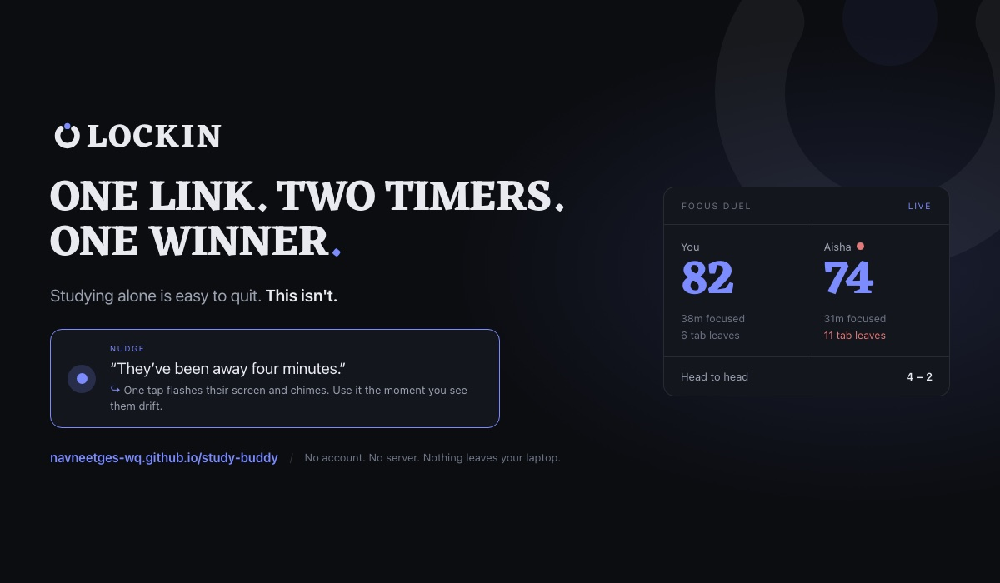
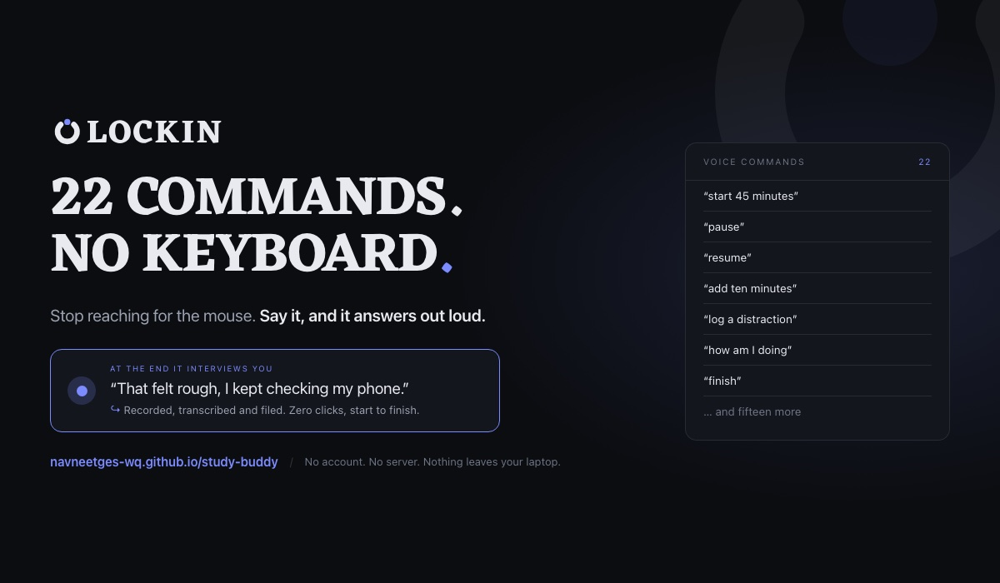

A visual identity kit for Lockin — a distraction-aware study companion. One logo, three A4 flyers, three blog banners, and the reasoning that got there.
Lockin is a study timer that never asks what you're working on. It watches how you work, counts every time you leave the tab, and when a session ends it doesn't say “done” — it reports what actually happened: planned versus actual focus, tab switches, time distracted, a focus score.
Students who sit down to study and lose two hours. The brand has to feel honest rather than cheerful.
A dark interface, one accent colour, hairline borders. The identity had to be native to that, not applied on top.
The app already had two fragments — a plain ring favicon and a 10px accent dot. The mark had to make them mean something.
Four directions were drawn and tested at 112px, 40px and 20px before one was chosen. The winner wasn't the cleverest — it was the one the app already implied.
The lock inside the dial. Most presence, but leans on the padlock pun.
exploredThe ring opens; the dot is the piece that closes it. Survives 16px best.
chosenLocking on, not locking up. Reads as a scanner icon.
exploredA literal padlock in the app's card geometry. Clearest, most generic.
exploredA fifth direction — a padlock whose body was the circular dial — was drawn and cut: a round body under a narrow shackle reads as a lightbulb, not a lock.
“Lockin” means focus, not security. Two of the four directions leaned on a padlock, which would have cast a study app as a VPN or a password manager. The chosen mark says nothing about locks — it says a session is open, and one piece completes it.
It also costs nothing to adopt. The app already shipped a ring and an accent dot that had no relationship to each other. This mark is those two elements doing one job, so it reads as the app rather than as new decoration.
The gap is solved, not eyeballed. Its chord is derived from the dot outward — wide enough to clear both round caps, the dot itself, and a set margin of air either side. Change the dot and the gap re-solves.
The dot is deliberately wider than the stroke. That is what stops it reading as the head of a loading spinner and makes it read as a separate piece dropping into place.
The ring's stroke is 28% of its own diameter, tuned up from a lighter first cut so it carries the same weight as Eczar's bold stems.
LOCKIN is set in Eczar Bold (weight 700, v2.000) by Vaibhav Singh at Rosetta Type Foundry, under the SIL Open Font License. Caps, tracked 40/1000 em. In every delivered file the letters are converted to outlines, so the artwork never depends on the font being installed.

on light
one-colour · printThe alternative lockup drops the mark into the word and becomes the letter, which removes the two-circle repetition of the primary. Tighter and more distinctive, but it needs size — below 150px wide the gap and the dot start to merge, so the primary stays the default.
Below 48px the mark switches to a separate favicon cut — stroke up to 34% of diameter, dot enlarged, margins tightened. A scaled-down primary mark turns to mush at that size; this doesn't.
The app already shifts its accent with the weather where you are. The mark follows it — and it's the only part of the brand that changes colour, only ever to an accent the app is already using.
Clear space: one dot diameter on all four sides. Minimum sizes: primary lockup 120px wide, O-lockup 150px, mark 16px using the favicon cut. The gap never rotates off twelve o'clock, and the dot never travels around the ring.
Rather than one poster, three — each leading on a different hook, built from a single skeleton so they read as a family. A4, CMYK, 300 dpi, with a vector PDF for the printer and a real CMYK TIFF alongside it.



| The brief asks for | On the flyer |
|---|---|
| App logo and name | ✓ Top left, with the kicker “Focus companion · Web app” |
| Headline / tagline | ✓ Eczar Bold, two lines, plus a deck that strikes through the competing claim |
| Key features or benefits | ✓ A four-item grid, plus a second hook shown as a live band rather than a bullet |
| Suitable visuals | ✓ The product's own interface — session report, duel panel, command list — never stock imagery |
| Call to action | ✓ “Start your first session.”, the address, and a vector QR code to the live app |
| Size & colour mode | ✓ A4 at 300 dpi · 2481×3509 · genuine CMYK TIFF, plus a vector PDF |
The accent shifts in CMYK. #7C8CFF is a saturated blue-violet outside the CMYK gamut, so the converted files read slightly duller than screen. That is inherent to print, not a conversion fault — if the press wants FOGRA or SWOP, reconvert from the RGB master with their profile.
The flyers are dark, edge to edge. That's the brand, but it is heavy ink coverage; on cheap digital presses large dark fields can band or scuff. Worth a conversation with the shop before a long run.
The banner is not a shrunk flyer. It's seen small, in a feed, next to other things competing for the same click — so it carries a few big words and one idea, at a size that still reads in a card.



| A4 flyer | Blog banner | |
|---|---|---|
| Held at | Arm's length, in the hand | Seen at 300–600px in a feed |
| Reading time | Seconds to a minute | Under a second |
| Word count | ~130 words, skim layer and read layer | A headline, a deck, four chips |
| Colour mode | CMYK, 300 dpi, print | RGB, 72 dpi, screen |
| Call to action | QR code and printed address | The whole image is the link |
The brief asks not to accept the first answer. These are the changes that actually altered the work — each one caught by looking at the result or measuring it, not by taste.
A padlock whose body was the circular focus dial. Rendered at 112px it read as a lightbulb: a round body under a narrow shackle tapers into a bulb silhouette. Widening the shackle didn't fix it.
The direction was cut entirely and replaced with Keyhole — the lock inside the dial rather than beside it — which then lost to Locked In on the padlock-pun argument.
In an early wordmark the “o” was a filled disc. It measured exactly 38 units tall, the same as the “c” beside it — and still read visibly smaller. Solid shapes always look smaller than outlines of equal diameter, so it needed 1.6 units of optical overshoot. The measurement was right; the eye was the thing to trust.
“Most timers tell you time's up.” sets over two lines. The rule was being sized
from the width of line one and drawn through line two, so it overshot by a third.
Re-measured against its own line.
The entire footer — QR code, address, call to action — was off the page, and it was not visible in a browser without measuring. The headline was cut from three lines to two, the report card and grid tightened, and the page now measures 1123px content against a 1123px page.
Chrome drops background colours when printing to PDF unless told otherwise, so the first vector A4 came out white. Fixed with print-color-adjust: exact, and verified by rasterising the finished PDF and looking at it rather than trusting the export.
When the mark was dropped into the wordmark it sat inside a fill-only group carrying stroke="none", so the ring inherited its way out of existence and only the dot rendered. The stroke is now set explicitly on the path rather than inherited.
Widening the report card by 24px left the banner headline 2px short of the space it needed, orphaning “TIME” onto a third line. Caught by measuring the rendered text width against the available column rather than eyeballing the layout.
A character was considered and rejected. The mark is already one: a loose dot is distraction, a dot in the gap is focus. That carries the idea without a new asset to draw and maintain.
It would be the obvious animation, and it would turn the logo into a loading spinner — which the app already has. The guideline forbids it, and the preloader's spinning ring was removed to honour it.
| File | Format | For |
|---|---|---|
| lockin-lockup-dark / light / white / black | SVG | Primary logotype — editable vector, opens in Illustrator, places in Photoshop as a vector smart object |
| lockin-lockup-o-* | SVG | Alternative lockup, the mark as the O |
| lockin-icon · lockin-favicon | SVG | Square mark, and the heavier cut for 16–48px |
| lockin-*-mode-{rain,night,clear,snow,cloud} | SVG | Focus-mode accent variants |
| lockin-icon-{16…1024} | PNG, alpha | Favicons, app icons, store listings |
| lockin-flyer-{01,02,03}-A4 | PDF, vector | Send to the printer — true A4, type stays vector |
| lockin-flyer-{01,02,03}-A4-CMYK-300dpi | TIFF, CMYK | The brief's CMYK print requirement, 2481×3509 |
| lockin-flyer-{01,02,03}-A4-300dpi | PNG, RGB | Screen, slides, submission |
| lockin-banner-{01,02,03}-1200x700 | PNG, RGB | The banner as specified, plus a 2× retina cut |
| build.py · typeset.py · layout.py | source | Parametric generators — one type grid, one page skeleton; every asset regenerates from them |
| Eczar-Bold.ttf · OFL.txt | font | The instanced Bold weight and its licence |
Every SVG is true editable vector with the letterforms converted to outlines. Nothing in the kit depends on a font being installed, and nothing was drawn by hand twice — the generators hold the type grid, so kerning, stroke weight and the gap geometry are edited in one place.